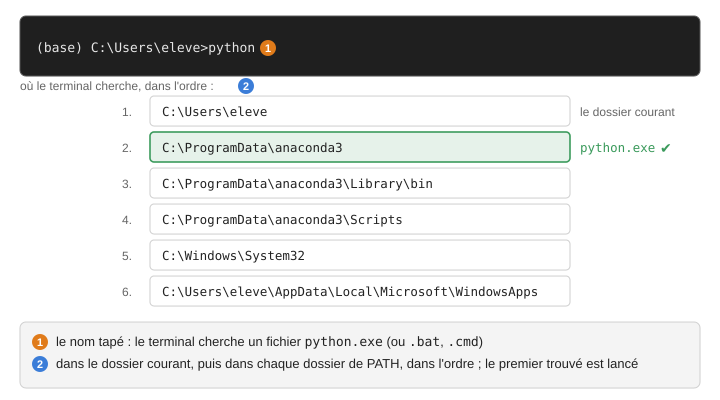

Variables d’environnement et recherche des programmes#
Quand on tape le nom d’un programme dans un terminal, ce programme est
cherché dans une liste de dossiers. Cette liste est définie par défaut par
Windows, et complétée par des variables d’environnement, dont PATH.
Les variables d’environnement#
Une variable d’environnement est un nom associé à une valeur, que Windows donne à chaque programme au moment où il le lance. Par exemple :
USERPROFILE: le dossier du compte,C:\Users\eleve;APPDATA: le dossier des réglages du compte,C:\Users\eleve\AppData\Roaming;PATH: la liste des dossiers où chercher les programmes, séparés par des points-virgules.
Dans un terminal, on lit une variable en écrivant son nom entre % dans
cmd, ou après $env: dans PowerShell :
C:\Users\eleve>echo %USERPROFILE%
C:\Users\eleve
C:\Users\eleve>set PATH
Path=C:\Windows\System32;C:\Windows;…
PS C:\Users\eleve> $env:USERPROFILE
C:\Users\eleve
PS C:\Users\eleve> $env:PATH
C:\Windows\System32;C:\Windows;…
set seul, dans cmd, affiche toutes les variables de la fenêtre.
Un programme reçoit les variables de celui qui l’a lancé, et les transmet
à ceux qu’il lance. C’est pour cela que VS Code lancé depuis Navigator
connaît Anaconda, et que VS Code lancé depuis le menu Démarrer ne le
connaît pas (V2) : Navigator s’exécute avec les variables
de base, le menu Démarrer avec celles du compte.
D’où viennent les variables#
Trois origines, qui s’ajoutent :
les variables système, les mêmes pour tous les comptes du poste (Paramètres, « Modifier les variables d’environnement système ») ; seul un administrateur les change ;
les variables du compte (Paramètres, « Modifier les variables d’environnement pour votre compte ») ;
PATHdu compte s’ajoute àPATHdu système ;les modifications faites dans une fenêtre, par une commande
setou par un script commeactivate.bat(Les environnements conda). Elles disparaissent avec la fenêtre.
Afficher le chemin d’un programme#
La commande where répond à la question « quel fichier sera lancé si je
tape ce nom ? ». Elle affiche tous les fichiers que le terminal trouverait,
dans l’ordre ; le premier est celui qui répond. Dans un Anaconda Prompt
des postes de la salle :
(base) C:\Users\eleve>where python
C:\ProgramData\anaconda3\python.exe
C:\Users\eleve\AppData\Local\Microsoft\WindowsApps\python.exe
Dans un cmd ordinaire, seule la seconde ligne apparaît. where conda,
where jupyter, where git répondent de la même façon, et une réponse
vide veut dire que le nom n’est pas reconnu. C’est la première commande
à taper quand un programme ne répond pas, ou quand ce n’est pas le bon
qui répond.
Sous PowerShell, where.exe python (avec l’extension : where seul y
désigne une autre commande). Sous macOS et Linux, which -a python.
Comment le terminal trouve un programme#
Quand on tape
pythonpuis Entrée, le terminal cherche un fichier nommépython.exe(oupython.bat,python.cmd, selon la listePATHEXT) d’abord dans le dossier courant, puis dans chaque dossier dePATH, dans l’ordre. Le premier trouvé est lancé ; les suivants sont ignorés.
Recherche de
pythondans un Anaconda Prompt, où les dossiers d’Anaconda sont en tête dePATH.#Deux messages s’expliquent ainsi :
'conda' n'est pas reconnu en tant que commande interne ou externe»aucun dossier de
PATHne contient de fichierconda.exeniconda.bat(A2).«
Python n'a pas été trouvé ; exécutez sans arguments pour l'installer à partir du Microsoft Store» : le premierpython.exetrouvé est celui deC:\Users\eleve\AppData\Local\Microsoft\WindowsApps, un fichier que Windows fournit pour proposer une installation, et aucun dossier contenant un vrai Python n’est devant lui (V7).Ce qui met les dossiers d’Anaconda devant les autres est l’activation d’un environnement (Les environnements conda).